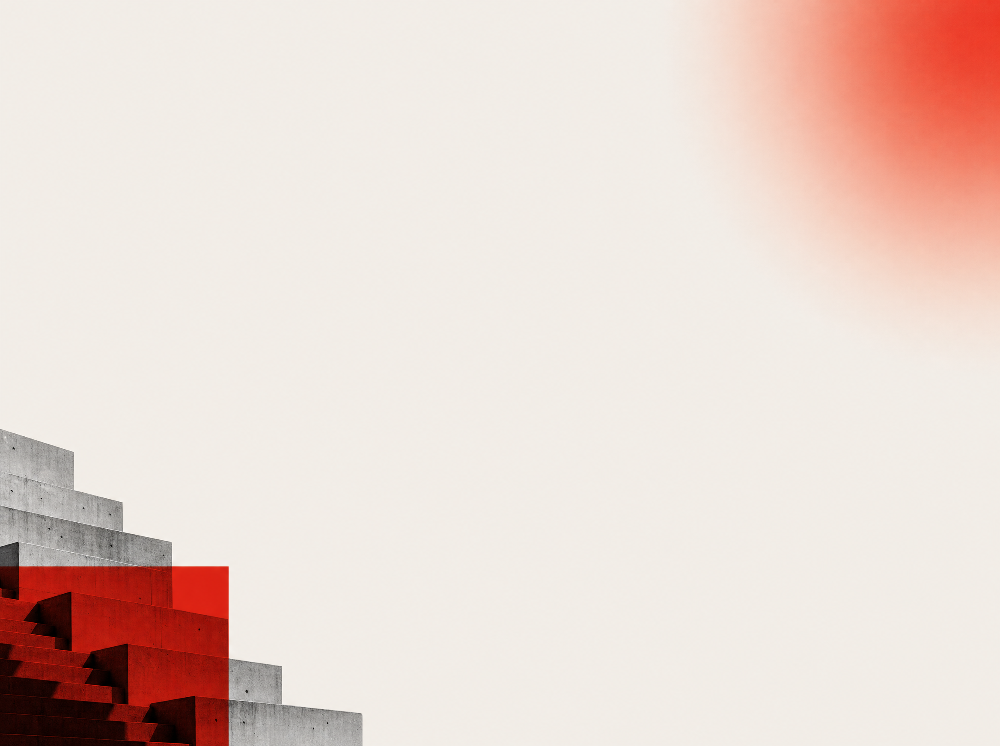

PP.MEDIA · И_И_ · стратсессия по применению ИИ
«
Хотим ИИ
»
это ещё не потребность.
«ХОТИМ
ИИ»
запрос с рынка
СРАЗУ ВНЕДРЯТЬ, МИНУЯ АНАЛИЗ, ОЦЕНКУ И ПРОРАБОТКУ
ЧЕРЕЗ НЕДЕЛЮ
дашборд поверх хаоса, пилот на
неготовых данных, бот, про которого забыли
НА ВЫХОДЕ
прототип на готовом процессе, карта
зрелости,
дорожная карта 90 дней
1
ГДЕ ИМЕННО
цепочка ценности,
11 категорий процессов
ИИ живёт в процессе,
не «в компании вообще»
2
ПРИГОДНОСТЬ
AI-ready = эффект ×
готовность × внедряемость
деньги · данные · владелец ·
пилот без расползания в хаос
3
ЗРЕЛОСТЬ L1–L5
L1
L2
L3
L4
L5
ИИ подключается с L4
на L1–L2 модель учит на шуме,
перепрыгнуть ступени нельзя
4
КЛАСС РЕШЕНИЯ
5 классов: правила, прогноз,
распознавание, генерация,
поддержка решений
часто хватает low-code, модель лишняя
!
Итог
«Хотим ИИ» закрывается за неделю красивым внедрением, которое создаст проблемы.
Нормальные работающие прототипы собираются за две, но с предварительной проработкой.